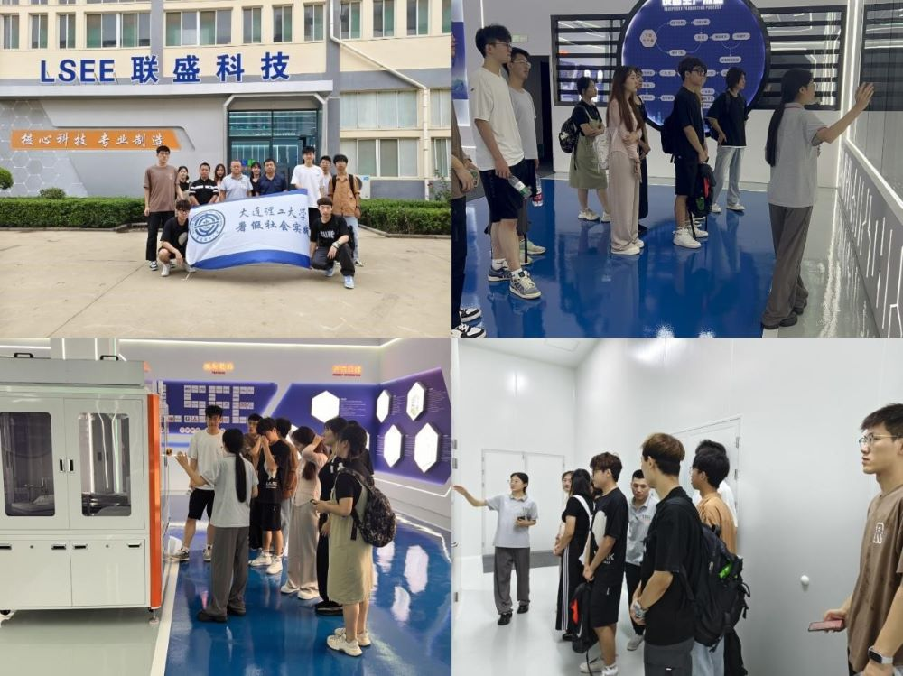
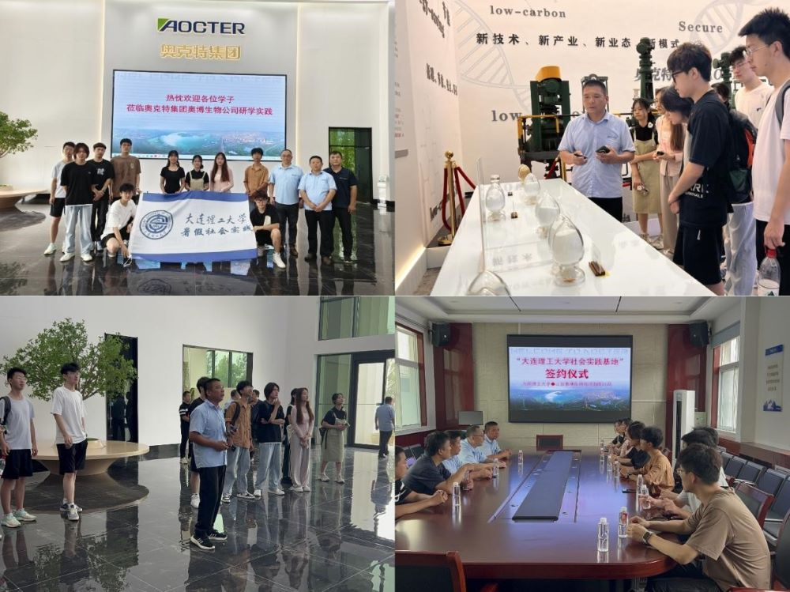

科技下乡的号角奏响崭新的征程，乡村振兴的蓝图描绘金秋的气息。大连理工大学软件学院、国际信息与软件学院“紫韵·星火”实践团于2024年暑假奔赴山东省聊城市，深入基层乡村，走进科技企业，开展了一系列实地调研与实践活动，展现了大工学子的社会责任感与时代担当。
人民群众是国家发展之根本，乡村医疗是国家补贴之重点。为知晓和平社区的实际医疗资源配置情况，实践团分为两个小组各自展开针对当地医疗卫生层面的调研，调研方式主要有发放调查问卷、访谈等。调研范围覆盖广泛，各类年龄段及性别群体均纳入研究范畴。
通过实地调研，实践团了解到当地的医疗卫生条件尚不完善，附近的医疗单位只能针对一些常见的疾病进行有效治疗，而当身体出现其他状况时则需到较远的大医院方能有效就诊。

在当前国家经济转型升级和区域协调发展战略的深入推动下，山东省聊城市高唐县的企业发展正步入一个全新的发展阶段。作为地方经济的重要支柱，高唐县的企业群体不仅承载着促进经济增长、增加就业的重要使命，还肩负着带动地区产业升级、提升区域竞争力的关键任务。
为探究地区发展状况，了解企业对经济的辐射带动作用，实践团来到了山东联盛电子设备有限公司。研发人员表示，公司始终坚持科技创新作为核心竞争力，积极响应国家科创兴国战略，以技术研发为基础，以市场需求为导向，推动自动化技术的应用。实践团成员纷纷就关心的技术问题向研发人员请教，双方互动热烈，交流成果丰硕。
对聚力加快转变发展方式、转换增长动力的山东来说，专精特新企业是助力经济增长的生力军，更是经济活力的主要载体。作为科技型企业，山东奥博生物科技有限公司在其中扮演着不可或缺的角色。
实践团来到了山东奥博生物科技有限公司进行企业走访。通过工作人员了解到，近年来，山东奥博生物科技有限公司瞄准高端化、智能化、国际化方向，加快推进新一代糖醇及氨基酸重点项目建设。为进一步扩大国际市场，公司还于泰国建立了生产基地，进一步提升了公司的国际竞争力和品牌影响力。
